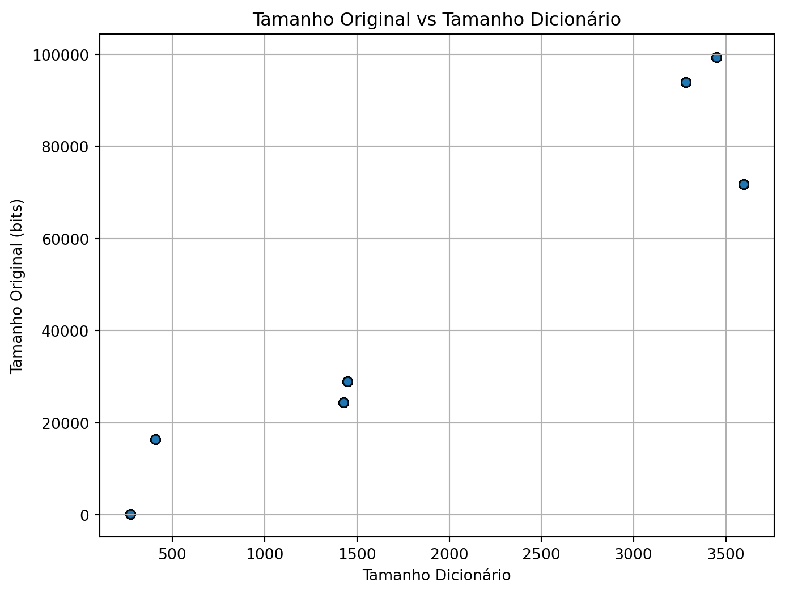
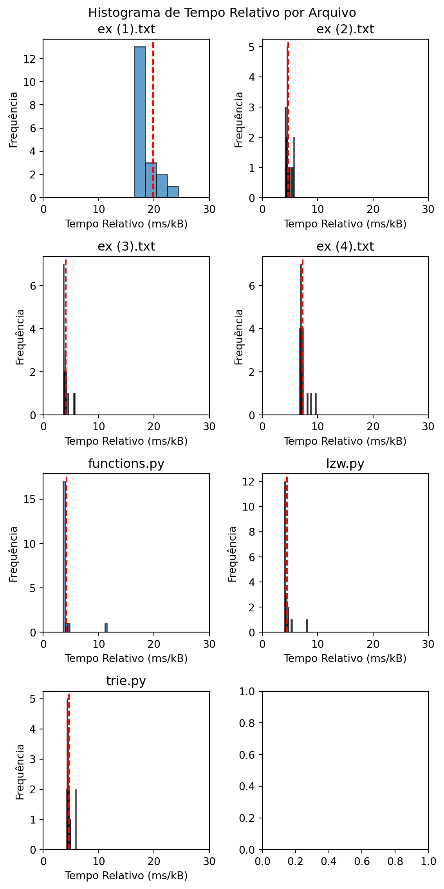
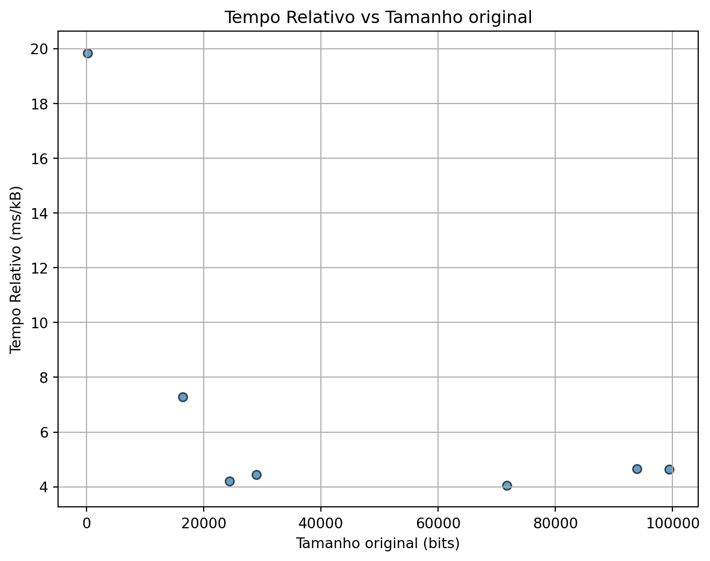
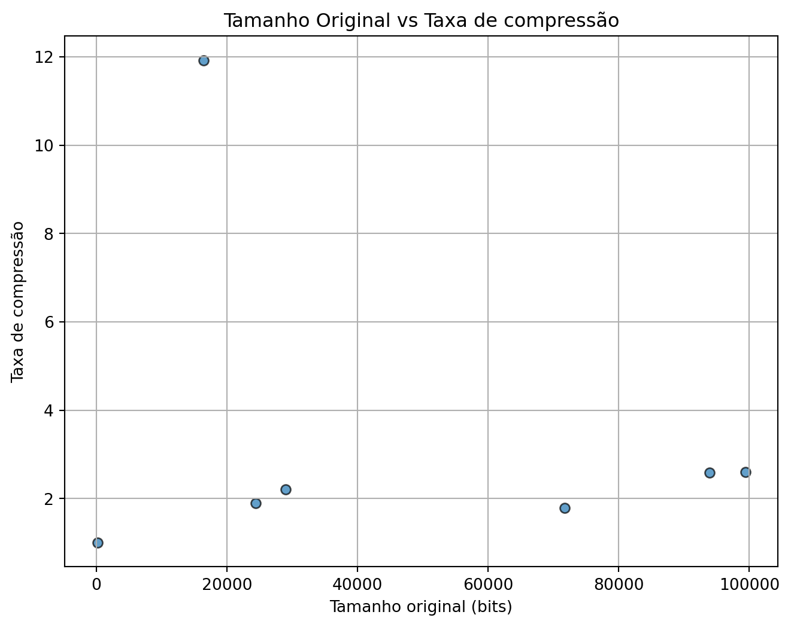

Faz a codificação, calculando seu tempo de computação;
Faz a comparação entre os tamanhos do arquivo original e o resultado comprimido, os cálculos de taxa de compressão e tempo relativo ao tamanho da entrada;
Um conjunto de funções auxiliares como conversão de String em ASCII para string binária, compressão e descompressão da lista de códigos de inteiro para binário.
A pasta onde contém o conjunto de arquivos de entrada para a realização de testes.
Análise de Dados
Code
import pandas as pdimport numpy as npimport matplotlib.pyplot as pltdf = pd.read_csv("out.csv")df
Arquivo
Tamanho original (bits)
Tamanho comprimido (bits)
Tamanho Dicionário
Qtd de bits por código
Taxa de compressão
Tempo de compressão (ms)
Tempo Relativo (ms/kB)
0
ex (1).txt
144
144
271
9
1.000000
0.421227
23.963136
1
ex (1).txt
144
144
271
9
1.000000
0.332420
18.911004
2
ex (1).txt
144
144
271
9
1.000000
0.983119
55.928548
3
ex (1).txt
144
144
271
9
1.000000
0.363589
20.684174
4
ex (1).txt
144
144
271
9
1.000000
0.293871
16.717995
...
...
...
...
...
...
...
...
...
135
trie.py
99392
38316
3448
12
2.594008
51.574690
4.250844
136
trie.py
99392
38316
3448
12
2.594008
52.923220
4.361991
137
trie.py
99392
38316
3448
12
2.594008
54.921539
4.526695
138
trie.py
99392
38316
3448
12
2.594008
54.346404
4.479292
139
trie.py
99392
38316
3448
12
2.594008
53.412890
4.402350
140 rows × 8 columns
Dados coletados nos testes
Nesta tabela temos os dados dos testes rodados.
Arquivo: O nome do arquivo de entrada;
Tamanho original (bits): Tamanho do arquivo;
Tamanho comprimido (bits): Tamanho dos códigos;
Tamanho dicionário: Quantidade de elementos no dicionário;
Qtd de bits por código: Número de bits para os códigos, calculado por bitlength(max(code));
Taxa de compressão: A razão entre os tamanhos do arquivo e dos códigos - Tamanho Original / Tamanho Comprimido;
Tempo de compressão: Tempo de processamento, para cada arquivo foram feitas 20 compressões, para se ter um tempo médio com mais confiabilidade;
Tempo relativo (ms/kB): Tempo de compressão pelo tamanho do arquivo de entrada.
Code
plt.figure(figsize=(8, 6))plt.scatter( df["Tamanho Dicionário"], df["Tamanho original (bits)"], alpha=0.7, edgecolors="k",)plt.grid(True)plt.xlabel("Tamanho Dicionário")plt.ylabel("Tamanho Original (bits)")plt.title("Tamanho Original vs Tamanho Dicionário")plt.show()

O tamanho do dicionário tende a crescer linearmente com o tamanho do arquivo de entrada.
Também há um crescimento linear com a saída comprimida.
Code
def bootstrap_mean(data, num_samples=10000): n =len(data) sample_means = np.zeros(num_samples)for i inrange(num_samples): sample = np.random.choice(data, size=n, replace=True) sample_means[i] = np.mean(sample)return sample_meansfig, ax = plt.subplots(figsize=(6, 12), ncols=2, nrows=4)fig.suptitle(f"Histograma de Tempo Relativo por Arquivo")for i, fileinenumerate(df["Arquivo"].unique()): time = df.loc[(df["Arquivo"] ==file), "Tempo Relativo (ms/kB)"].values sample_means = bootstrap_mean(time) ax[i //2, i %2].hist(time, bins=20, alpha=0.7, edgecolor="k") ax[i //2, i %2].axvline(np.mean(sample_means), color="r", linestyle="--") ax[i //2, i %2].set_title(file) ax[i //2, i %2].set_xlabel("Tempo Relativo (ms/kB)") ax[i //2, i %2].set_ylabel("Frequência") ax[i //2, i %2].set_xlim(0, 30)plt.tight_layout()plt.show()

Esses são os tempos (ms) relativos ao tamanho do arquivo (kB), que tendem a serem consistentes, exceto alguns casos atípicos, que podem ser atribuídos a forma de medição do tempo.
Code
tempos_relativos = ( df[ ["Arquivo","Taxa de compressão","Tamanho original (bits)","Tempo Relativo (ms/kB)", ] ] .groupby("Arquivo") .mean())tempos_relativos.reset_index(inplace=True)tempos_relativos
Arquivo
Taxa de compressão
Tamanho original (bits)
Tempo Relativo (ms/kB)
0
ex (1).txt
1.000000
144.0
19.841823
1
ex (2).txt
2.585425
93944.0
4.660409
2
ex (3).txt
1.790083
71768.0
4.049378
3
ex (4).txt
11.921569
16416.0
7.276534
4
functions.py
1.894508
24424.0
4.216108
5
lzw.py
2.209228
29016.0
4.436337
6
trie.py
2.594008
99392.0
4.631007
Dados médios
Code
plt.figure(figsize=(8, 6))plt.scatter( tempos_relativos["Tamanho original (bits)"], tempos_relativos["Tempo Relativo (ms/kB)"], alpha=0.7, edgecolors="k",)plt.grid(True)plt.xlabel("Tamanho original (bits)")plt.ylabel("Tempo Relativo (ms/kB)")plt.title("Tempo Relativo vs Tamanho original")plt.show()

Com exceção de arquivos muito pequenos, o tempo relativo tende a ser constante com o tamanho do arquivo.
Code
plt.figure(figsize=(8, 6))plt.scatter( tempos_relativos["Tamanho original (bits)"], tempos_relativos["Taxa de compressão"], alpha=0.7, edgecolors="k",)plt.grid(True)plt.xlabel("Tamanho original (bits)")plt.ylabel("Taxa de compressão")plt.title("Tamanho Original vs Taxa de compressão")plt.show()

ex (2).txt foi intencionalmente criado para ter uma alta taxa de compressão. ex (1).txt é um arquivo muito pequeno para ter compressão efetiva. Os outros arquivos têm uma taxa de compressão próxima de 2.